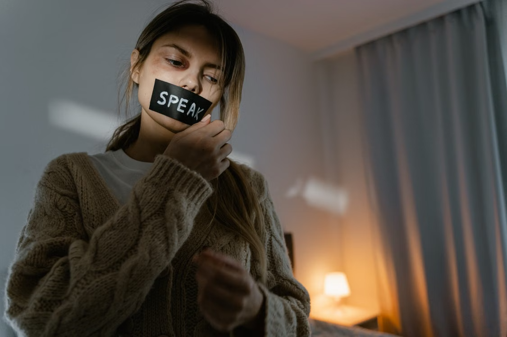

English · Feature
Home Shouldn't Hurt
The prevalence, causes, and consequences of domestic violence against women in the Philippines

When you hear the word "domestic violence," what comes to mind? For many people, it is a vague image of bruises or a slammed door. But for the women who live it, it is much more than that. It is a lifetime of fear compressed into everyday moments, a fear that follows them from the kitchen to the bedroom to the front door. Domestic violence is not always visible, but it is always real.
This is not something that happens far away from us in the Philippines. It is happening in our own homes right here in our country, in our cities and even barangays, within the confines of walls that no one ever questions from outside. Based on statistics from the Philippine National Police Women and Children Protection Center, thousands of cases of violence against women and children are reported every year, and domestic violence comprises a major number of these cases. In just the first ten months of 2025 alone, the PNP reported thousands of VAWC-related cases, most of which involved domestic abuse.
One story that captured national attention in 2026 involved a woman who spent years in prison for killing her husband, a police officer. On October 29, 2026, the Supreme Court Second Division acquitted her of parricide, ruling that she suffered from battered woman syndrome when she killed him. The Court found that she endured years of physical, psychological, and economic abuse at the hands of her husband, and that her fear was grounded in real violence. Her case was not just about one woman's freedom. It was about what abuse can push a person to do, and how the justice system is slowly learning to recognize the cycle of violence that traps women in abusive homes.
Around the same time, another woman came forward to file a complaint against her live-in partner, also a police officer. She said he beat her repeatedly over the years, and in one incident, he attacked her inside their home while their children were present. She sought help from women's rights groups, but her story raised questions that many survivors face. Will she be believed? Will her abuser use his position to intimidate her? Will she lose her children or her home just for speaking out? These are not hypothetical fears. They are the daily reality for many women who consider reporting abuse.
The numbers tell a story that words sometimes cannot. From 2025 to 2026, the government recorded thousands of VAWC-related 911 calls, with domestic abuse leading the list. According to the Philippine Commission on Women, violence against women remains one of the most underreported crimes in the country, with many survivors choosing silence over the risk of retaliation, shame, or losing their livelihood. The World Health Organization estimates that one in three women worldwide experience physical or sexual violence in their lifetime, most often from an intimate partner.
But not every story ends in tragedy. Some women survive, rebuild, and find their way back to themselves. The Department of Social Welfare and Development runs centers and programs that help survivors of abuse find safety, counseling, and a path toward independence. Women's rights groups across the country continue to push for stronger enforcement of laws like the Anti-Violence Against Women and Their Children Act, or RA 9262, which provides legal protection and remedies for survivors.
The fight against domestic violence is not just about laws or statistics. It is about changing the way society responds when a woman speaks up. It is about believing her, supporting her, and making sure she does not have to choose between silence and safety. Because behind every statistic is a real woman, a real mother, a real daughter, who deserves to live without fear.
If you or someone you know is experiencing domestic violence, help is available. In the Philippines, contact the PNP Women and Children Protection Center, your nearest barangay VAW desk, or the Department of Social Welfare and Development. You are not alone, and you deserve to be safe.
References
- Ayalin, A. (2026, October 29). SC acquits woman of parricide over “battered wife syndrome” defense. ABS-CBN News. Read source
- Rita, J. (2026, October 27). Woman files abuse complaint vs live-in partner cop. GMA News Online. Read source
- Torres-Tupas, T. (2026, October 30). SC acquits woman who killed husband after 11 years of being abused. INQUIRER.net. Read source
- Sapungan, R., & Sapungan, R. (2026, March 24). DSWD assures VAWC victim-survivors of comprehensive package of services. Read source
- De Vera-Ruiz, E. (2026, March 26). Domestic abuse leads VAWC-related 911 calls in 2025–2026, gov’t data shows. Manila Bulletin. Read source
- UN Women. (2025, November 19). Facts and figures: Ending violence against women. Read source
- World Health Organization. (2026, June 18). Violence against women. Read source
- Philippine Commission on Women. (2025, September 9). 2025 18-day campaign to end violence against women. Read source
- Philippine Statistics Authority. (2025). 2025 Fact Sheet on Women and Men in the Philippines: Violence Against Women. Read source (PDF)